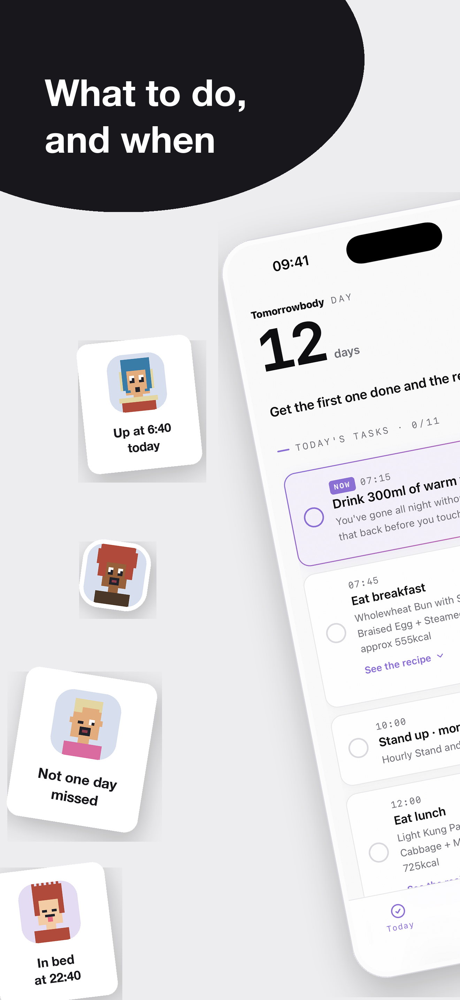
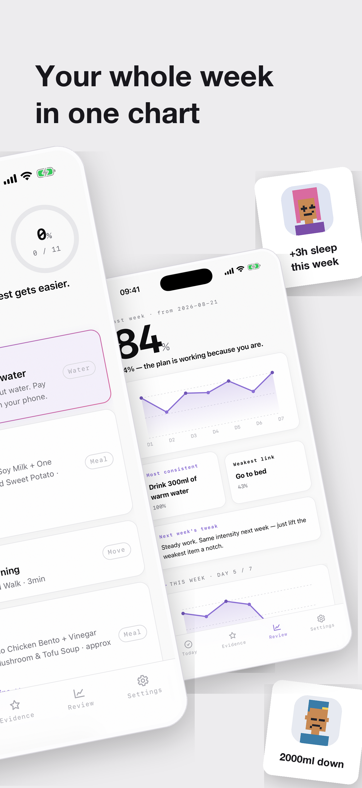
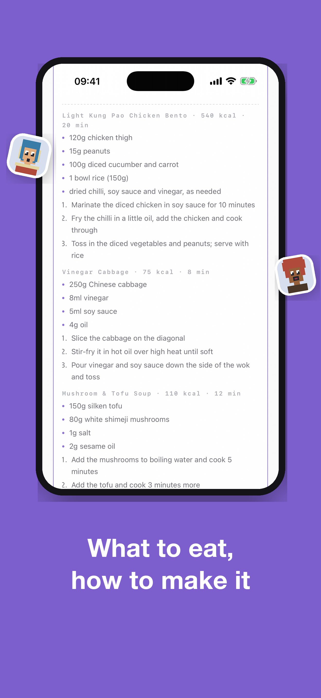
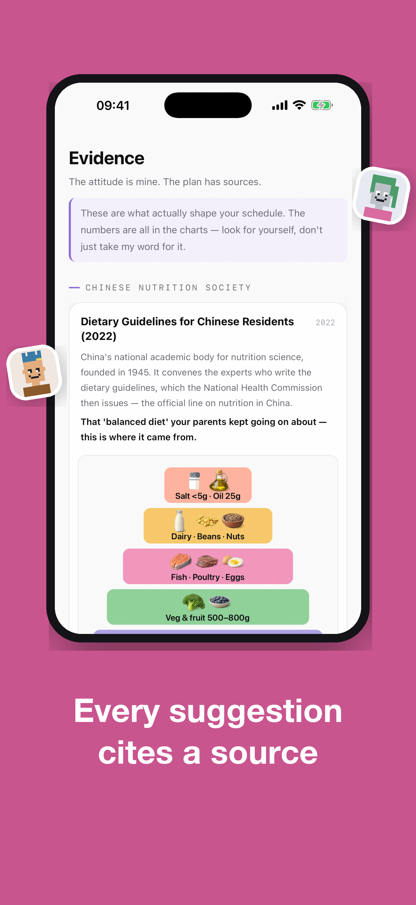
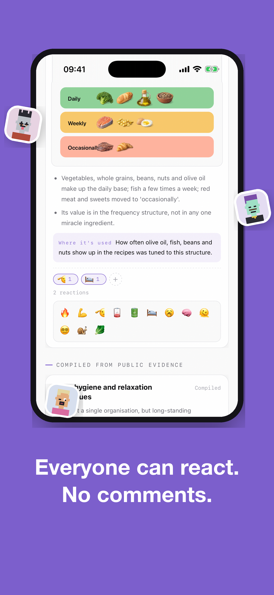

The other 20% can wait until you've slept.
Answer eight questions and get a daily schedule computed from your own hours — when to eat, when to move, when to sleep. It calls you when it's time.
现已在支持地区的 App Store 上线。免费下载，一次性解锁；价格以 App Store 显示为准。不是订阅，没有广告。
Now available on the App Store in supported regions. Free download with a one-time unlock; see the App Store for local pricing. No subscription or ads.
DAY
12天
0%
少想多做，第一项任你挑。
今日任务 · 6/11
07:15
起床先喝 300ml 温水
07:45
吃早餐
瘦肉青菜粥 + 卤蛋一个 + 蒸红薯
19:30
今日运动
慢跑 25 分钟 · 中强度
23:30
上床睡觉
今日精选复盘设置
07:15
一天从这里开始
The day starts here
时间表不是模板，是按你几点起床算的
Not a template — computed from when you actually wake
Wake at seven and wake at noon, and you get two completely different days. Water, meals,
exercise, wind-down, bedtime — every slot is derived from your own wake time,
and worked around the hours you're at work.
100 道菜，46 个动作
100 dishes, 46 exercises
按《中国居民膳食指南》《WHO 身体活动指南》《ACSM 运动处方》整理，每条建议都写明出处。
Compiled from the Chinese Dietary Guidelines, WHO activity guidelines and ACSM's exercise prescription — every suggestion cites its source.
素食、低碳、断食都认
Vegetarian, low-carb, fasting
选了饮食习惯，配餐逻辑跟着变，不是把同一份菜单换个标题。
Pick your eating pattern and the meal logic actually changes — not the same menu with a new label.
12:00
它不哄你
It doesn't coddle you
到点会叫你，超时语气会变难听
It calls you on time, and gets sharper when you're late
Get on-time task reminders, with optional overdue reminders that become more direct. Personal reminders follow your chosen date and time. System notifications require your permission.
自己加的提醒也算
Your own reminders too
「明天八点提醒我吃药」—— 你定几点就是几点，不会被日程挪走，也不计入完成率。
"Remind me to take my meds at eight." The time you set is the time it fires, never shifted by the schedule, never counted against your completion rate.
完成率会反过来改方案
Your rate rewrites the plan
连着完不成，下周任务量自动减 30%。做得好就升一档强度。量可以少，脸自己挣。
Miss too much and next week's load drops 30%. Do well and the intensity goes up a level. The volume can bend; the pride is yours to earn.
15:30
长什么样
What it looks like
五屏，看完你就知道它是不是你要的
Five screens. That's enough to know.

今日任务Today

每周复盘Weekly review

菜谱做法Recipes

循证依据Evidence

表情互动Reactions
21:00
坚持五天之后
After five days
你的周报会漂给一个陌生人
Your week drifts to a stranger
主动开启分享并连续打卡满五天后，系统任务与完成记录会通过 Apple CloudKit 公开分享，显示系统昵称和头像；你也可以阅读其他人的周报。没有私信、加好友或评论区。身高体重、评估答案和私人提醒文字不加入周报。你可以关闭分享、撤回周报或删除已分享内容。
When you enable sharing and complete five qualifying check-in days, your system tasks and completion records are shared publicly through Apple CloudKit with a generated nickname and avatar. You can also read other reports. There are no direct messages, friend requests or comments. Body measurements, assessment answers and private reminder text are excluded. You can turn sharing off, withdraw your report or delete shared content.
23:30
关于你的数据
About your data
个人计划留在本机，互动由你选择
Your plan stays on your device. Sharing is your choice.
评估、个人计划和打卡保存在本机。你主动分享的周报和表情会发送到 Apple CloudKit 公共数据库，供其他用户读取。无需注册独立 App 账号；发布与删除需要原 iCloud 账号。没有广告追踪。
Your assessment, personal plan and check-ins are stored on your device. Reports and reactions you choose to share are sent to Apple CloudKit for other users to read. No separate app account is required; posting and deleting require the original iCloud account. There is no advertising tracking.
0个独立注册账号separate app accounts
0条广告ads
0个第三方追踪 SDKthird-party trackers
Offline计划与打卡离线可用；互动需要联网Plans and check-ins work offline; interactions need a connection
ORG
开发与运营主体
Developer & operator
Tomorrowbody，由 Yuyan Software 开发与运营
Tomorrowbody is built and operated by Yuyan Software
Tomorrowbody 是由 Zhuhai Gaoxin Yuyan Software Development Studio (Individually Owned Business) 开发并运营的健康生活产品。我们围绕真实作息设计本地优先的计划、提醒和复盘体验。
Tomorrowbody is developed and operated by Zhuhai Gaoxin Yuyan Software Development Studio (Individually Owned Business). We build local-first planning, reminders and reflection around each person’s real schedule.
Inside the app, Settings → What do you want has the FAQ and a form that goes straight
to the developer. Email works too — replies may be slow, but they come.